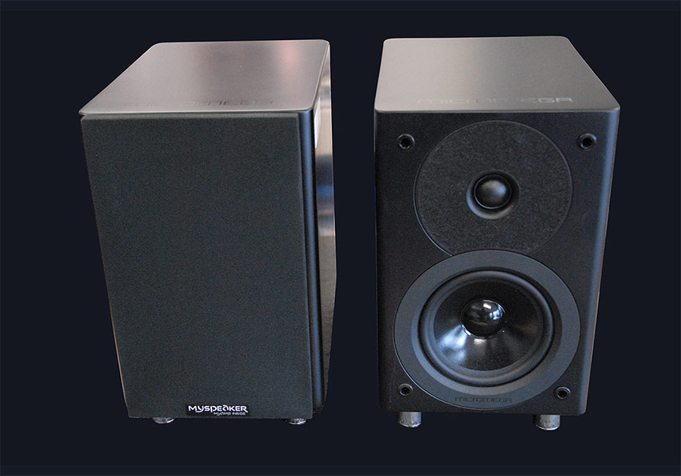
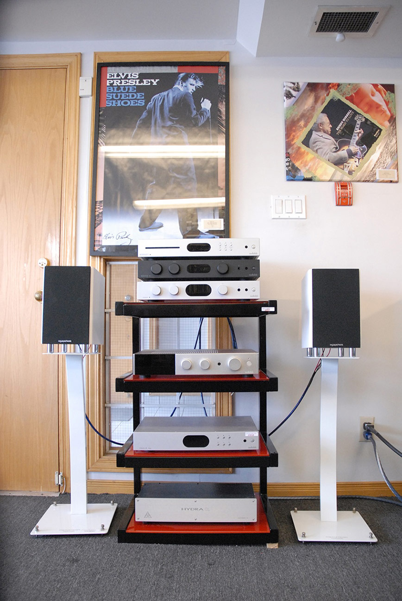

Speaker Stands in Ottawa: A Buyer's Guide
A speaker stand is a rigid support that holds a bookshelf speaker at the correct height and decouples it from furniture. It is not an accessory — on the right stand, a standmount tightens its bass, sharpens its imaging, and locks the tweeter to ear level. Getting two things right, height and rigidity, delivers more audible improvement than almost any cable or tweak at the same price.
Key Takeaways
- Aim to put the tweeter at seated ear level (about 36–38″), which usually means a 24–28″ stand.
- Match the top plate to the speaker's footprint and check the stand's weight rating.
- Mass-fill hollow pillars with dry sand or steel shot to damp resonance and tighten bass.
- Use spikes on carpet; use pads or isolation footers on hardwood or suspended floors.

This guide covers the four questions that decide whether a stand helps or hurts: how tall it should be, how to match it to your speaker, whether to add mass fill, and how to couple it to your floor.
How Tall Should Your Speaker Stands Be?

The goal is to put the tweeter at, or very close to, your ear level when seated. For most listeners in a typical chair that is around 36–38 inches from the floor, which usually calls for a 24–28 inch stand depending on the speaker's cabinet height. Measure your seated ear height first, then subtract the distance from the base of the speaker to its tweeter — the difference is your ideal stand height. Our Solidsteel SS-6 (24 inch) and Target Audio FS-Series (28 inch) bracket the range most standmounts need.
How Do You Match a Stand to Your Speakers?
Match the top plate to the footprint of your speaker so the cabinet is fully and evenly supported, and confirm the stand is rated for the speaker's weight. A heavier, more rigid stand suits a larger or denser speaker; a high-mass steel design like the FS-Series anchors a substantial monitor, while a tripod such as the SS-6 pairs neatly with lighter cabinets. A little adhesive putty or the supplied pads between speaker and top plate locks the two together for sharper imaging.
Should You Fill the Stands With Sand or Shot?

If your stands have hollow pillars, filling them with dry silica sand or steel shot adds mass and damps resonance in the support itself, which can tighten bass and lower the noise floor. Sand is inexpensive and effective; lead-free steel shot adds more mass per volume. Keep the fill bone-dry to avoid rattles or corrosion, and don't overfill solid-pillar stands that aren't designed for it.
Spikes or Isolation: Coupling to Your Floor
Spikes couple the stand rigidly to the floor, which works well on carpet over a solid subfloor by piercing through to a stable surface. On hardwood or tile, use the supplied shoes or discs to protect the finish. If you have a suspended wooden floor that flexes, an isolation footer or pad can sometimes sound better than rigid coupling — see our racks & accessories for isolation options. It is worth experimenting, since the right choice depends on your floor construction.
Our Speaker Stands at a Glance
| Model | Height | Construction |
|---|---|---|
| Solidsteel SS-6 | 24-inch | Tripod, matte black |
| Target Audio FS-Series | 28-inch | High-mass steel |
| Custom Artisan Series | Custom height | Walnut / oak |
Tell us your speakers and seated ear height and we will spec the right stand — get in touch or pair them with our bookshelf speakers.